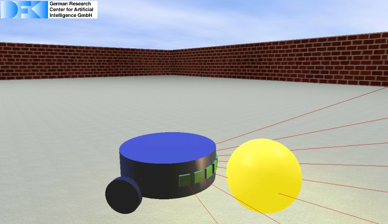

Basic Plugin Tutorial

Introduction
There are different possibilities how the MARS simulation can be used. One possibility is to write a plugin that handles the loading of a scenario and interfaces the simulation to some control software. Also, in many cases, the control software can be directly wrapped into a simulation plugin. This tutorial will guide you how to create a new plugin, load your scene, and control the simulation.
Prerequisites
We assume you already have a MARS development environment setup in
"$MARS_DEV_ROOT". You should also have a robot scene file to start with (if not you can use this scene to follow the tutorial. You should have a terminal opened with the $MARS_DEV_ROOT/env.sh sourced into it. cd $MARS_DEV_ROOT;
. env.sh
Basic Plugin
Create and build a new plugin
To setup your first plugin you can use a script wich will create a new plugiin:
cd $MARS_DEV_ROOT/mars/plugins/plugin_template
./cnp.sh
The script will ask you for the project name, which will be also the class name of the main c++ class. E.g. we can enter "BasicPlugin" here. Then you can enter a description of your plugin ("The plugin created by following the guide of the basic plugin tutorial."). Afterwards, enter the author name, email, and confirm your data. The script will create your plugin one folder above the script ("$MARS_DEV_ROOT/mars/plugins/BasicPlugin"). You can go into that folder and use the build.sh script to build the plugin for a first test if everything went well. To install the plugin you have to use "make install" within the new created build folder.
cd $MARS_DEV_ROOT/mars/plugins/BasicPlugin
./build.sh
cd build
make install
Now copy the "mars_default" configuration to "mars_basic_plugin" and add the plugin to the "other_libs.txt" within "mars_basic_plugin" to load the new plugin when starting MARS.
cd $MARS_DEV_ROOT/install/configuration
cp -r mars_default mars_basic_plugin
cd mars_basic_plugin
other_libs.txt:
/home/malter/Arbeit/LIMES/auto-dev/install/lib/liblog_console.so
/home/malter/Arbeit/LIMES/auto-dev/install/lib/libconnexion_plugin.so
/home/malter/Arbeit/LIMES/auto-dev/install/lib/libdata_broker_gui.so
/home/malter/Arbeit/LIMES/auto-dev/install/lib/libcfg_manager_gui.so
/home/malter/Arbeit/LIMES/auto-dev/install/lib/liblib_manager_gui.so
BasicPlugin
Start the simulation:
mars_app
Adapt the plugin
In the "$MARS_DEV_ROOT/mars/plugins/BasicPlugin/src/BasicPlugin.cpp" you will find a "init()" function that is called by the simulation to initialize the plugin. Just comment in the loadScene line with the path to your scene file. void BasicPlugin::init() {
// Load a scene file:
control->sim->loadScene("robo.scn");
In this tutorial we are going to access the motors and sensors of the simulation. To do that we first need to include the corresponding interfaces:
#include <mars/interfaces/sim/MotorManagerInterface.h>>
#include <mars/interfaces/sim/SensorManagerInterface.h>
To control the robot in the simulation you can set motor values in the update callback. The update callback is triggered by the simulation thread giving the simulation step time as parameter. Here we can set some motor values:
void BasicPlugin::update(sReal time_ms) {
control->motors->setMotorValue(1, 1.0);
control->motors->setMotorValue(2, 3.0);
}
After doing "make install" in "$MARS_DEV_ROOT/mars/plugins/BasicPlugin/build" we should have a small robot driving a circle when starting the simulation. In the next step we want to read the sensor values of the laserscanner to create a wall following behavior. We can acess the sensor values by the id the senor gets when it is loaded into the simulation:
void BasicPlugin::update(sReal time_ms) {
static unsigned long laserId = control->sensors->getSensorID("laser");
control->motors->setMotorValue(1, 1.0);
control->motors->setMotorValue(2, 3.0);
}
The "getSensorData()" methods gets the sensor id and a pointer to a unallocated sReal pointer. It allocates memory for the sensor data and it is important to free the memory after reading the sensor data. The method returns the number of values representing the sensor data.
void BasicPlugin::update(sReal time_ms) {
static unsigned long laserId = control->sensors->getSensorID("laser");
sReal *sensorData;
int numSensorValues = control->sensors->getSensorData(laserId, &sensorData);
assert(numSensorValues == 8);
if(sensorData[3] < 1.0 || sensorData[0] < 0.4) {
control->motors->setMotorValue(2, 12.0);
}
else if(sensorData[0] > 0.7) {
control->motors->setMotorValue(2, 4.8);
}
else {
control->motors->setMotorValue(2, 5.0);
}
control->motors->setMotorValue(1, 5.0);
free(sensorData);
}
Now we can do "make install" again, start the simulation, and we should see robot following the walls! The plugin source generated by the "cnp.sh" script includes many commented code, that gives examples how to use the simulation modules like the "DataBroker", the "CFGManager", or the "MainGUI". A seperated documentation of these modules will be created soon.